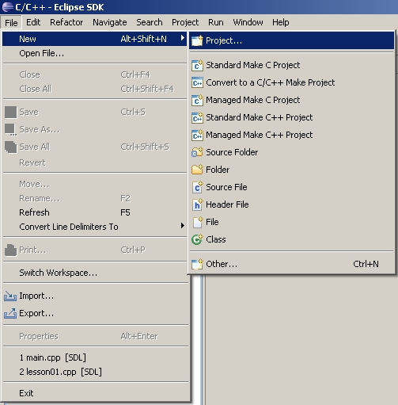
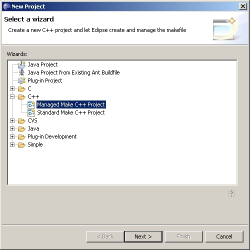
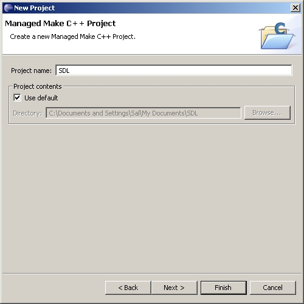
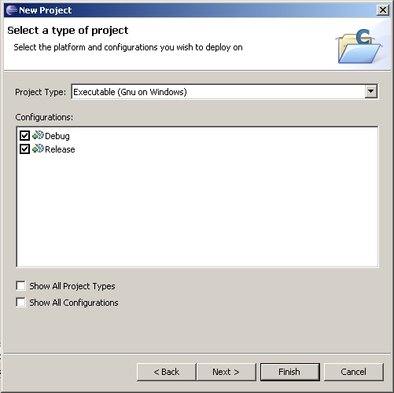
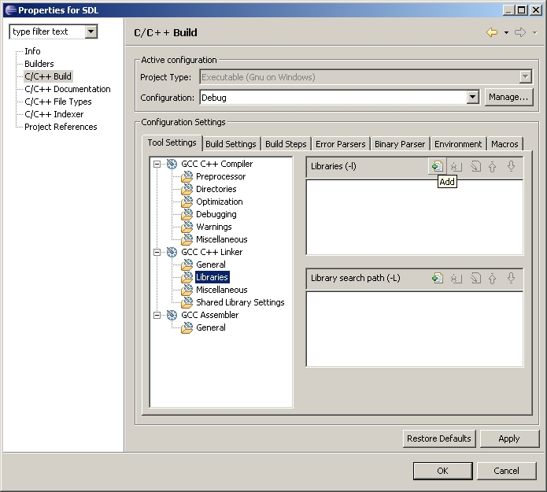
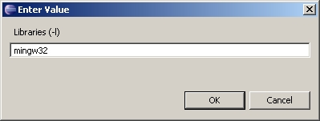
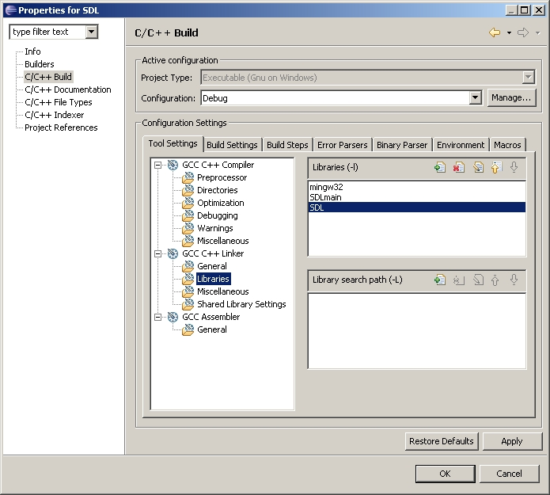

Setting up SDL in Eclipse
Last Updated 11/02/09
1)First thing you need to do is download SDL headers and binaries.
You will find them on the SDL website, specifically on this page.
Scroll Down to the Development Libraries section and download the MinGW32 development library

Open gz archive and there should be a *.tar archive inside.
Open the *.tar and there should be a folder inside of that.
Open the folder and it'll contain a bunch of subfolders.
2)Copy the contents of the lib subfolder to the MinGW lib folder.
The MinGW lib folder should be at C:\MinGW\lib.
3)After that, open the include subfolder in the archive and extract the folder named "SDL" to the MinGW include folder, which should be at C:\MinGW\include.
Note: Some versions of SDL won't have a folder named "SDL" in the archive's include subfolder, but just a bunch of header files. To get around this simply create a folder named "SDL" in your MinGW include folder and copy all the header files from the archive to that folder you made.
4)Now take the SDL.dll from the archive (it should be inside the bin subfolder) and extract it. You're going to put this in the same directory as your exe when you compile it.
Alternatively, you can copy SDL.dll to C:\WINDOWS\SYSTEM32 so your SDL app will find SDL.dll even if it's not in the same directory. If you're using a 64bit version of Windows, you'll want to put the dll in C:\Windows\SysWOW64.
The problem with this method is if you have multiple SDL apps that use different versions of SDL, you'll have version conflicts. If you have SDL 1.2.8 in SYSTEM32 when the app uses 1.2.13 you're going to run into problems. Generally you want to have your SDL.dll in the same directory as your executable developing and you'll always want to have SDL.dll in the same directory as the exe when distributing your app.
5)Now start up Eclipse and start a new project.
6)Make it a managed make C++ project.
7)Name your project.
8)Then hit finish.
9)Go to the project properties.

10)Go to the C/C++ Build menu, then the Libraries submenu. In the Libraries submenu click add.
11)Then paste in:
12)Then do the same with:
13)Add source new source file to the project, and paste the following code into the new source file:
You will find them on the SDL website, specifically on this page.
Scroll Down to the Development Libraries section and download the MinGW32 development library
Open gz archive and there should be a *.tar archive inside.
Open the *.tar and there should be a folder inside of that.
Open the folder and it'll contain a bunch of subfolders.
2)Copy the contents of the lib subfolder to the MinGW lib folder.
The MinGW lib folder should be at C:\MinGW\lib.
3)After that, open the include subfolder in the archive and extract the folder named "SDL" to the MinGW include folder, which should be at C:\MinGW\include.
Note: Some versions of SDL won't have a folder named "SDL" in the archive's include subfolder, but just a bunch of header files. To get around this simply create a folder named "SDL" in your MinGW include folder and copy all the header files from the archive to that folder you made.
4)Now take the SDL.dll from the archive (it should be inside the bin subfolder) and extract it. You're going to put this in the same directory as your exe when you compile it.
Alternatively, you can copy SDL.dll to C:\WINDOWS\SYSTEM32 so your SDL app will find SDL.dll even if it's not in the same directory. If you're using a 64bit version of Windows, you'll want to put the dll in C:\Windows\SysWOW64.
The problem with this method is if you have multiple SDL apps that use different versions of SDL, you'll have version conflicts. If you have SDL 1.2.8 in SYSTEM32 when the app uses 1.2.13 you're going to run into problems. Generally you want to have your SDL.dll in the same directory as your executable developing and you'll always want to have SDL.dll in the same directory as the exe when distributing your app.
5)Now start up Eclipse and start a new project.

6)Make it a managed make C++ project.

Then hit next.
7)Name your project.

Then hit next.
8)Then hit finish.

9)Go to the project properties.
10)Go to the C/C++ Build menu, then the Libraries submenu. In the Libraries submenu click add.

11)Then paste in:
mingw32

and click ok.
12)Then do the same with:
SDLmain
andSDL

Do it in this exact order or it won't work.
13)Add source new source file to the project, and paste the following code into the new source file:
#include "SDL/SDL.h" int main( int argc, char* args[] ) { //Start SDL SDL_Init( SDL_INIT_EVERYTHING ); //Quit SDL SDL_Quit(); return 0; }
14)Now save the source and compile. Make sure SDL.dll is in the same directory as the executable. If there are no errors, you're finished. Otherwise go back and make sure you didn't skip a step.